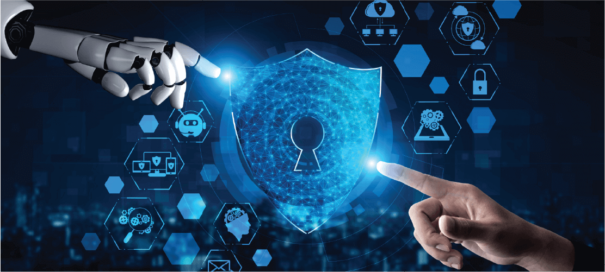
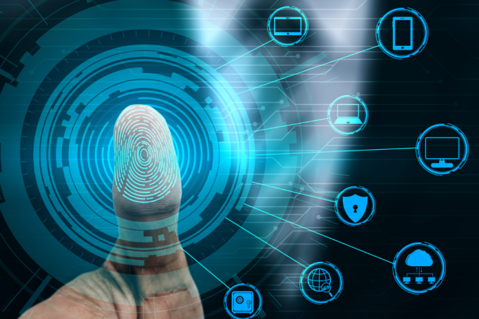
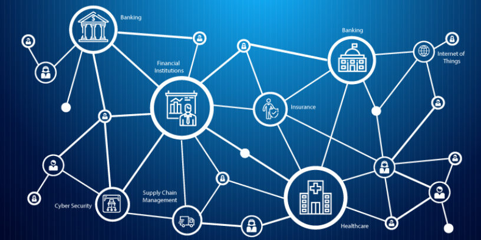

Understanding Cybersecurity Trends in 2025
As we move deeper into the digital age, the landscape of cybersecurity is evolving rapidly. With an increase in cyber threats and a growing reliance on digital platforms, understanding the cybersecurity trends in 2025 is crucial for businesses, organizations, and individuals alike. In this article, we’ll explore the major cybersecurity trends shaping the future and how they will impact the way we protect our data and digital infrastructure.
1. Rise of Artificial Intelligence and Machine Learning in Cybersecurity
Artificial Intelligence (AI) and Machine Learning (ML) have already begun to play a pivotal role in cybersecurity. By 2025, AI and ML will be even more advanced, providing businesses with better detection, response, and defense mechanisms. These technologies enable security systems to analyze vast amounts of data quickly and effectively, identifying potential threats, vulnerabilities, and unusual patterns before they escalate into full-blown attacks.
AI-powered solutions will allow for faster decision-making, automated response systems, and real-time threat hunting, helping security teams reduce response times and prevent attacks from spreading.
2. Increased Focus on Cloud Security

As more organizations migrate to the cloud, ensuring the security of cloud environments will become even more important. By 2025, cloud security solutions will continue to evolve, providing more robust protection against cyberattacks like data breaches, DDoS attacks, and ransomware.
Security will no longer just be about securing on-premise data centers; it will extend to hybrid and multi-cloud environments, ensuring that both public and private clouds remain protected. Expect to see more advanced cloud-native security tools that provide encryption, secure access controls, and continuous monitoring for vulnerabilities.
3. Zero-Trust Architecture Becomes the Standard

The Zero-Trust security model has been gaining traction in recent years, and by 2025, it will likely become the standard approach for enterprise cybersecurity. The Zero-Trust model is based on the principle that no entity—whether inside or outside the organization—should be trusted by default. Instead, users, devices, and applications must constantly verify their identity and access permissions.
This approach is particularly relevant in today’s remote and hybrid work environments, where traditional perimeter-based security models are no longer sufficient. Zero-Trust will become essential for protecting sensitive data, especially in organizations where employees work from various locations and use a wide range of devices.
4. Expanded Use of Biometric Authentication
With traditional passwords becoming increasingly vulnerable to breaches, biometric authentication is poised to play a more significant role in cybersecurity by 2025. The use of fingerprints, facial recognition, and voice recognition will become more commonplace in both consumer and enterprise environments. These technologies offer a higher level of security compared to traditional passwords and are more resistant to phishing and brute-force attacks.
Organizations will increasingly adopt multi-factor authentication (MFA) that combines biometrics with other forms of verification (such as hardware tokens or security apps), providing an additional layer of protection against unauthorized access.
5. Growth of Ransomware and Cybercrime-as-a-Service

Ransomware attacks have surged in recent years, and unfortunately, this trend is expected to continue into 2025. Cybercriminals are becoming more sophisticated, and ransomware-as-a-service (RaaS) platforms allow even novice hackers to launch devastating attacks.
As a result, businesses will need to adopt more comprehensive cybersecurity strategies, including advanced threat detection, regular backups, and employee training to minimize the risk of falling victim to ransomware. Cyber insurance will also become more essential, as it helps organizations recover from cyberattacks.
6. Privacy Regulations and Data Protection Laws

With an increasing number of high-profile data breaches, privacy regulations and data protection laws are expected to become even stricter in 2025. Governments and regulatory bodies around the world are introducing and updating privacy laws to ensure that organizations are held accountable for the data they collect and store.
The General Data Protection Regulation (GDPR) has already set the standard for privacy laws in Europe, and other regions are likely to follow suit with similar legislation. Organizations will need to prioritize data protection and compliance with these regulations to avoid penalties and ensure customer trust.
7. Integration of Blockchain for Enhanced Security
Blockchain technology, known for its use in cryptocurrencies like Bitcoin, is gaining attention for its potential to enhance cybersecurity. By 2025, blockchain could be integrated into various aspects of cybersecurity, from identity management to secure data sharing.
Blockchain’s decentralized and immutable nature makes it ideal for preventing fraud, securing transactions, and ensuring the integrity of data. Expect to see more blockchain-based solutions for secure voting, supply chain verification, and even preventing identity theft.
8. Cybersecurity Skills Shortage and the Need for Training

As cyber threats become more sophisticated, the demand for skilled cybersecurity professionals will continue to rise. By 2025, the cybersecurity industry will face a significant skills gap, with organizations struggling to find qualified professionals to manage complex security systems.
To bridge this gap, there will be a heightened focus on training and development. Companies will invest in upskilling their current workforce, while educational institutions and online platforms will offer more specialized cybersecurity programs. Additionally, automated tools and AI-powered security solutions will help mitigate the effects of this shortage by providing security teams with intelligent assistance.
Conclusion
The cybersecurity landscape is rapidly evolving, and staying ahead of emerging trends is essential for safeguarding sensitive data and digital infrastructure. In 2025, we can expect to see AI-driven security, advanced cloud protections, the widespread adoption of Zero-Trust models, and an increased reliance on biometrics for authentication. Additionally, privacy regulations and blockchain technology will play crucial roles in securing our digital world.
As cyber threats continue to evolve, organizations and individuals must remain proactive in their cybersecurity strategies. By understanding and adapting to these trends, we can create a safer digital future.